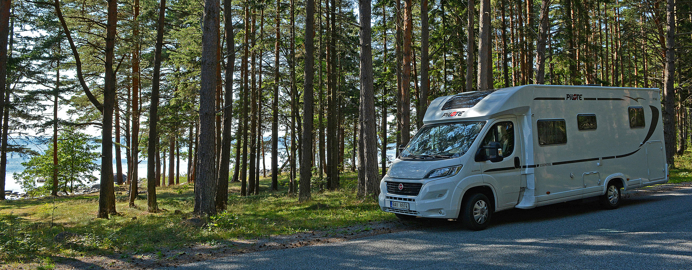
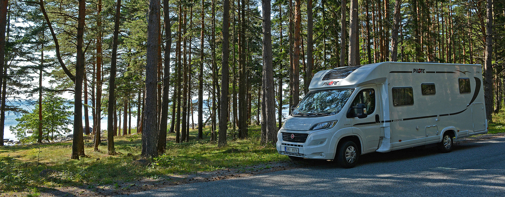

01.12.2019 - Při výběru srovnávejme srovnatelné! 2.část
Před nedávnem jsem na tyto stránky umístil 1.část článku, resp pokusu o návod, jak objektivně srovnávat nabídky jednotlivých prodejců. Jak číst v jejich nabídkách a seznamu konfigurací obytných aut, kolik si připočítat nebo naopak odečíst za ten či onen druh výbavy. Pokud čtenář první část článku nečetl, moc doporučuji začít s ním. Byl o výbavě, kterou se mohou jednotlivá auta lišit v exteriéru. No a dnes se podíváme dovnitř. Jdeme na to.
Jdeme se podívat dovnitř
a) prostor u vstupních dveří
Mokytiéra: Samotné vstupní dveře jsme si porovnávali v první, listopadové části článku. Každopádně zkontrolujte, jestli je v ceně moskytiéra neboli síť proti hmyzu. V létě je to neocenitelná, ba přímo nezbytná součást výbavy, zejména míříte-li do míst komárům a jiným létajícím potvorám zaslíbených. Samozřejmě, že se dá doplnit a domontovat i následně. A zrovna u této výbavy jsou docela velké konstrukční i cenové rozdíly.

Nejjednodušší je koupit závěs z chemlonových svislých chlupatých něco jako provazů (na obrázku vlevo). Dáte za něj okolo 400-500Kč. Výhody: cena a snadná montáž. Nevýhody: nebrání vlétnutí hmyzu úplně 100%, zvláště při větru a pak také zabraňuje vniku světla do interiéru. No a už jen soukromý názor: vypadá to docela pouťově a musí to být pracholep. Na prostředním obrázku máte lepší řešení italské firmy Fiamma. Je konstrukčně shodné s řešením pro normální domy: Dva nebo více širších závěsů, s magnetickým spojováním. Toto je jen o stovku či dvě dražší a tak za 600-800Kč ho běžně pořídíte. Úplně vpravo je pak zasunovací síť v rámové konstrukci od firmy Remis. To už je docela sofistikové provedení. Okolo dveří rám, síť složená do "harmoniky", jezdící v rámu po kolejničkách. Cena je ale okolo 4-5000Kč a pokud je auto už výroby vybaveno dvěřní sítí proti hmyzu, bude to v drtivé většině případů právě toto řešení. Takže rozdíl dalších 4-5000Kč mezi autem s ní a bez ní.
Prostor pro uložení bot: To je moje oblíbené téma. Sice nesouvisí v cenovými rozdíly ale spíš s větší či menší domyšleností a praktičností řešení jednotlivých modelů a značek. Lidi prostě chodí většinou v botách a při vstupu do auta by měli logicky mít možnost je i někam odložit. Čím více lidí na palubě, tím více tato nutnost narůstá. A to nemluvím o delší dovolené, kdy každý člen posádky používá více nežli jeden pár. Rázem tu máme třeba 8 i více párů obuvi, která se někam musí umístit. A když mají cestovatelé, podobně jako my v Dodíkovi, celý vnitřní prostor vyhlášený jako "čistý", musí se prostě bot zbavit hned u vchodu. Existují v podstatě 4 možné varianty, kam "botník" umístit a je velmi smutné a nepraktické, pokud výrobce obytňáku nenabídne ani jednu z nich. A že takových výrobců a modelů je!
Takže první řešení, které se často objevuje u vanů, jsou boční dvířka ve spodní části dvojsedačky. U vanů to není daleko od vchodu a vzhledem k většinou malému počtu cestovatelů ve vanu, toto řešení docela vyhovuje. Prostor je většinou hluboký jen do poloviny dvojlavice, protože ve druhé polovině může být umistěno topení nebo bojler nebo i jiná technologie. Nicméně i ta polovina z prostoru pod sedačkou nabídne většinou slušně dimenzovaný botník. Někdy je toto řešení používáno i u větších aut (s délkou tak do 6m), takže zkontrolujte.
{kind=link}
{kind=link}
Další možností je použít skříňku vlevo od vstupních dveří. Tedy pokud jí tam obytné auto má. Některé modely mají hned vedle dveří např. chladničku a umístit takto botník pak bohužel nepřipadá v úvahu. Přítomnost dvířek na této straně ale automaticky neznamená, že tam botník najdete. Např. některé modely Malibu tam pro změnu mají prostor pro odpadkový koš. Takže jak v článku zazní ještě mockrát: určitě dvířka otevřete a nakoukněte.
Třetí a poměrně obvyklou variantou je, že v podlaze, někde u vstupních dveřích, najdete různě velký dekl a pod ním úložný prostor, který se pro umístění bot výborně hodí. Různí výrobci je dělají i různě dimenzované. Od malého prostoru, kam dáte tak jedny dětské boty, až po hluboké a rozměrné "sklepy", kam se toho vejde opravdu hodně. Určitou nevýhodou tohoto řešení je, že pokud majitel chce mít podlahu pokrytou kobercem, tak na botník se pak toto místo nehodí. Při každém obouvání odhrnovat koberec asi není ideál praktičnosti. Samozřejmě že botník v podlaze může být umístěn i jinde v interiéru, podle kreativity výrobce. Cokoliv dál ode dveří ale pak může sloužit spíš pro umístění jen záložních párů bot. Ty aktuálně nošené prostě musí být více při ruce.
{kind=link}
U aut, které mají vpravo od vstupních dveří nějakou formu další sedačky, připadá v úvahu případný botník v její spodní části. Bohužel, variant jak ta která značka ve svém konkrétním modelu tento prostor využila, je snad nejvíc a jen velmi málo z nich směřují k použitelnému botníku. Někde není naprosto žádná možnost něco uložit, někde jen velmi malá a někde je naopak královský prostor pro haldu bot. Samozřejmě je to (ostatně jako všechno okolo obytných aut) o prioritách a preferencích každého majitele a tak pokud je pro vás prostor pro uložení bot důležitým parametrem, pořádně se po zvažovaném autě rozhledněte. Třeba pro nás to důležitý bod byl a tak jak je to řešeno v Dodíkovi, si můžete prohlédnout v samostatném článku.
{kind=link}
b) pohled doprava, ke kabině řidiče
V drtivé většině aut tam najdete hlavní sezení. Jejich možná provedení jsme probírali v článku Jaký si vlastně pořídit obytňák. Dnes snad jen drobná úvaha na téma povrchy. V případě sedaček se bavíme o čalounění. Může být běžné látkové, nebo z umělé kůže (někde jí říkají biokůže), případně z pravé přírodní kůže. Cenové rozdíly jsou opět značné. Přechod z látky na biokůži vás přijde tak na 12-15000Kč, kdo touží po pravé přírodní kůži, tak minimální částka příplatku bude tak 50.000Kč, někde i víc.
Tady asi nemá smysl se podrobně rozepisovat. Snad jen jedna zmínka pro zajímavost: I ve světě obytných aut existují "tuningové" firmy, které zákazníkovi, jenž je stále nespokojen se standardní nabídkou výrobců obytňáků, mohou na přání a za určitý peníz upravit jeho mazlíka tak, že interiér se z luxusního provedení stane ještě více luxusním. Příkladem budiž tato přestavba interiéru běžného modelu obytného auta, a sice Hobby Optima de Luxe T70 GQ. Na obrázcích vlevo vidíte vždy provedení tak, jak jej nabízí Hobby, a vpravo upravené a "vytuněné" provedení. Na kolik taková úprava přijde? No, za hubičku to nepořídíte.
{kind=link}
Zastínění oken v kabině řidiče: v kabině řidiče můžeme za příplatek samozřejmě mít mnoho další výbavy. Jak rádio s navigací, nebo různé chromové doplňky palubní desky, volant a řadící páku v kůži, multifunkční funkce na volantu atd., ale ty v tomto článku zmiňovat nebudeme, protože jsou stejné jako v běžných autech. Tedy většina z nás má plus-mínus přehled, co se dá doobjednat a kolik to asi tak může stát. Tento článek se věnuje jen obytňákovým specialitám. A hlavní specialita obytňáků je zastínění kabiny. Když prostě večer stojíme v kempu nebo někde jen tak nadivoko, abychom se mohli oddělit od světa venku a vytvořit trochu intimní prostředí. Kabina se musí zastínit jak v případě hlavního čelního skla, tak obou postranních, v levých a pravých dveřích.
Ty nejlevnější modely obytňáků žádnou zástěnu nemají. Mohu-li radit, do takových aut nejděte. Nejen, že právě absenci zástěny nepříjemně pocítíte hned první noc ale většinou tak máte co dočinění opravdu s modelem, kde se šetřilo na všem. A od těch raději dál. Naštěstí jich dnes už moc v nabídce na trhu není.
O trochu lepší je to u aut, vybavených posuvným textilním závěsem. To se podél celé horní přihrádky natáhne nějaká kolejnička, do ní se připne krásně ušitý textilní závěs, ve dne se elegantně přichytí na boky kabiny a v noci prostě za sedačkami roztáhne a spojí. Viděl jsem je i Rimorů, u LMC, a dalších. Osmdesátá léta jsou zpět.
{kind=link}
Jejich cena je v kategorii několika set, připadně jednoho tísíce či dvou. Takže levné řešení ale je prostě už trochu "de mode", Kabina se tím opticky změnšuje. stěna pak vypadá spíš jako stan, sedícím cestovatelům většinou překáží a čechrá jim vlasy, zachytává prach (hlavně když za jízdy prašnou krajinou máte otevřená boční okna), atd. Prostě ano, zástěna to je, svojí funkci splní, poskytuje dokonce i určitou tepelnou izolaci ale je to řešení, které odešlo s minulým tisíciletím.
Magnetické zástěny: poměrně malý počet výrobců aut nabízí jako alternativu pečlivě vyrobené mobilní magnetické zástěny z různých materiálů, které mají v obrubě magnety a dají se tak snadno instalovat do oken. Prostě je jen vezmete, přiložíte na čelní či boční okno, ozve se "cvak" a zástěna drží. Některá horší provedení používají místo magnetů suché zipy nebo jen obyčejné gumové přísavky na okno.
{kind=link}
Dají se samozřejmě objednat dodatačně a dokoupit z různých karavanistických webů. Výhodou je, že prostor kabiny je k dispozici celý. Nevýhodou je, že když nejsou na oknech, tak prostě překáží. Někam je ráno musíte uschovat a to je za prvé práce navíc a za druhé je potřebné i místo pro jejich úschovu. Cena se už pohybuje od 1500 do 3000Kč.
Mám prostě zato, že v dnešní době jediné rozumné řešení je použití posuvných skládaných rolet, horizontálních či vertikálních. Vyrábějí je renomovaní výrobci jako je německý REMIS, DOMETIC a další. Je to stejné jako moskytiéra v hlavních vstupních dveřích: na okno se namontuje rám, ve kterém se rolety pohybují. Po zastavení je jen jedním pohybem zatáhnete (drahá auta jako jsou Concorde, Phoenix či Morelo, mají dokonce i elektrické ovládání, takže jen stisknete tlačítko).
{kind=link}
Je to skoro nezničitelné zařízení a tak vám vydrží dlouhá léta. Ale jak už to bývá, jeho cena je nejvyšší. Sada třech posuvných rolet (čelní sklo a dvě boční) vás vyjde tak na 15-17000Kč. A to je dámy a pánové i další finanční rozdíl, když má auto tyto rolety ve své základní výbavě.
c) materiály a provedení interiéru
Až když projdete a trochu pečlivěji prozkoumáte větší množství aut různých výrobců, tak teprve zjistíte, jak velké rozdíly jsou i v kvalitě pro interiér použitých materiálů. Provedení, tloušťka a dýhovaný povrh dřevěných částí "nábytku", kvalita potahových materiálů na sedačky, použitá držadla, kování a panty u skříněk, atd. atd. Pak je tu i řemeslná kvalita - jak jsou jednotlivé díly sesazeny, jak lícují. Toto se bohužel dost špatně popisuje, musí se to "ohmatat" a odzkoušet. Návod jak poznat výrobce, kteří to dělají kvalitnějí nežli ostatní, bez možnosti srovnání, žádný není. A tak si dovolím vlastní, osobní, soukromý, subjektivní názor. Bijte mě, ostouzejte, nesouhlaste, ale tvrdím, že dobří výrobci cenově normálních obytňáků, co do interiérů (ty rozšířenější v ČR) jsou: Carthago, Hymer, Frankia, Pilote, EuraMobil, Laika, občast Dethleffs a Benimar. A přesný opak vidím u aut jako Rimor, LMC, CI, Itineo a další. A vzhledem ke kvalitě, výbavě a provedení za předražené pak považuji značky Adria, nižší modely Niesmann-Bischoff a v první řadě Bürstner.
I když ani u těch lepších výrobců nesmíte polevit v pozornosti. Někdy se praktičnost totiž trochu upozadí pro lepší estetiku a design. Jeden příklad za všechny: Hymer má pro modelový rok 2020 krásný nový design horních úložných skříněk. Kování zcela chybí, otevírají se jen stiskem, zavírají stejně. Na fotkách a prezentacích to vypadá naprosto skvěle. Čisté, elegantní, moderní. V praxi to je za chvilku upatlané (zvláště u světlých dekorů) a buďto se s tím smíříte nebo furt čistíte. Takže vybírejte uvážlivě a u každé části obytňáku zkoušejte a přemýšlejte o každodenním používání.
{kind=link}
Oni se totiž výrobci obecně a logicky snaží odlišit od ostatních. Ideální layout, tedy rozložení vnitřní výbavy auta, se postupně ustálilo na několika optimálních variantách, všichni je mají a tak se každá značka snaží o něco "svého", co by ji odlišovalo. A přinášejí na trh různá detailní řešení, která mají společné to, že většinou jejich praktičnost není nic moc. Proto cokoliv vás v autě překvapí, případně dokonce zprvu nadchne, podrobte delší úvaze. Pár příkladů k dalšímu obrázku:
{kind=link}
1) Elektrosystémy jsou výklopně na dvířkách podstavce sedačky. Proč zařízení, ke kterému skoro nechodíte, zabírá jedno z nejlepších míst pro příruční skladovací prostory? Proč poměrně těžké komponenty (vč.jističů na 230V) jsou na titěrných dvířkách, zajištěných jen pružinovou západkou. Divné. 2) když je malá koupelna, zkusíme vytvořit sadu tenkých plastových (tedy snadno rozbitných) panelů, které by se mohli při sprchování nějak poskládat a zamezit smáčení skříněk, pověšených ručníků, WC, atd. Výsledek? Ani po pětiminutovém usilovném přemýšlení a zkoušení jsem nepřišel na to, jak to má fungovat a málem jsem se v koupelně zablokoval, s nacvaknutým panelem přes kliku dveří, takže by nešla otevřít. Super divné. 3) Ve většině aut se samostatným sprchovým koutem je vanička výškově dělená. Důvod je jasný: sprcháč je nad podběhem kola, takže většina výrobců v něm má schod jako nutné zlo. Na třetím obrázku výrobce posunul celý sprcháč směrem vzhůru. Na první pohled to vypadá skvěle. Na druhý: sprchový kout je o poznání nižší a pod polovinou vaničky musí pak být volný prostor, takže prošlápnutí a prasknutí vaničky bude asi jen otázkou času. 4) Co takhle nabídnout páté místo na sezení u stolu? No, posuďte sami, kolikrát toto řešení využijete a proti tomu, kolik jste ztratili místa ve skříňce, jak dlouho bude trvat, nežli trochu těžší sedící ten sedák vyvrátí, atd. Takže opět: originální? Asi ano. Praktické? Myslím, že moc ne.
A na závěr tady mám dotaz: napadne vás někoho, z jakého důvodu renomovaný výrobce obytných aut (a karavanů) docela pěkně řešenou, širokou a tím i praktickou poličku v kabině, nad hlavou řidiče a spolucestujícího, opatřil tím dřevěným dělícím pásem? A z velkého místa pro ukládání všeho možného udělal dva pruhy, kam se nic širšího nežli 7cm nevejde? Co ho k tomu vedlo? Má to být úschovna na deštníky? Na Nordic-walking hole? Díky předem za tipy, a názory, já na to prostě nepřišel, proč něco takového udělal. Z mého pohledu je to opět křečovitá snaha o originalitu a odlišení, která ve svém důsledku zabila docela slibně koncipovaný prostor.
{kind=link}
d) čeká nás kuchyň
Ani tady se nedá moc finančně posoudit rozdíl mezi jednotlivými výrobci a modely. Navíc je provedení kuchyně více či méně důležité pro ty cestovatele, kteří v ní více či méně vaří. Opět odkazuji na článek Jaký si vlastně vybrat obytňák, kde bylo toto probíráno. Taky tu na stránkách mám jeden článek, který kuchyně jednotlivých výrobců přímo porovnával (Dost místa na vaření?). Je ale už z ledna 2018 a mezitím jsou na trhu jiné, novější modely.
U kuchyně mám jednu jedinou radu: při výběru vlezte do úplně všech zásuvek a skříněk: všechny otevřete, vysuňte, podívejte se dovnitř. Protože pravidlo o hezkém designu na úkor účelovosti tady platí více než dvojnásob. Mám tu jeden příklad za všechny. Porovnejme si dvě kuchyně, které na první pohled vypadají hodně podobně. Ale jen na první pohled.
HYMER Tramp "Ambition" T-GL578 proti BÜRSTNER Lyseo IT 710
{kind=link}
Obě fotky jsou z katalogu výrobce. Hymer vlevo, Bürstner vpravo. Bohužel obrázky nezabírají celou kuchyň a tak přidávám info, že v horní části kuchyňku mají oba výrobci jednu skříňku, pracovní deska je tvarem shodně do "L" a ve spodní části má Hymer dva sloupy po dvou zásuvkách a Bürstner dva sloupy po třech zásuvkách. Bürstner tedy jasně vede! A to je přesně příklad, proč mám Bürstnerova auta za takovou na efekt postavenou, předraženou, a přitom poměrně nepraktickou záležitost. Je to klasický příklad výrobce, kde je design, tedy forma, o mnoho důležitější nežli obsah, tedy praktičnost. Bürstnera prodávají pěkné katalogy.
Takže druhý pohled, na pracovní desku: Hymer samozřejmě ví, že při vaření prská a za vařičem má snadno umyvatelnou ochranu. Bürstner na tyto detaily kašle a nabízí místo toho na zdi "atraktivní", velkou a pro spoustu lidí zcela zbytečnou desku - zásobník na kapsle Nespresso. Je zajímavé, že i kdyby byla posádka milovníci kávy a pořídili by si kávovar Nespresso, tak na linku by se v pohodě vešel naopak u Hymeru (místo toho květináče). U Bürstneru je pracovní deska řešena jinak a hůř, bez větší volné plochy. Držák na kapsle ale je už v základní výbavě.
"No jo ale když ten Bürstner má o tolik více místa v šuplících!" Takže na to mrkneme. Představte si, že jste třeba na výstavě v Brně, vlezete do Bürstnera a začnete kontrolovat šuplíky:
{kind=link}
Jóó prdlajs! V pravém sloupu je šuplík jenom jeden! Vrchní a spodní jsou jenom kryty na zakrytí ventilů plynu a (světe div se v kuchyni) dole jističů elektro rozvodu. Na fotce to nevidíte ale ten prostřední šuplík má po vysunutí s bídou 25cm na hloubku. No a v levém sloupu jsou tři šuplíky. Tedy to tak vypadá. Ty dva spodní když vysunete, zjistíte, že zasahují jen do poloviny skříňky, mají hloubku tak 35cm. No a ten vrchní se jen jako vysoký tváří. Má jen vysoké čelo a skrývá nízký a i málo hluboký příborník. Logicky, protože nad ním je už vařič. Ale proč je ten levý sloup tak málo hluboký, Bůh suď. Celkové skóre: 1x25cm, 2x35cm šuplík a stejně hlubový příborník. No a jdeme na Hymer:
{kind=link}
Tři zásuvky vysouváte a vysouváte a zastavíte se, až když plně vysunuté ukáží hloubku 60cm, hloubka výška zásuvek je také výrazně vyšší nežli u Bürstnera. No a čtvrtý šuplík je také příborník. Na fotce to není vidět ale za příborníkem šuplík pokračuje až do celkové hloubky opět nějakých 60cm. Celkové skóre:3x60cm šuplík (a vyšší) a stejně hluboký příborník. Jasné vítězství. Jak že to bylo na první pohled?
Už slyším zastánce Bürstnerů: "ale Hymer to je jiná cenová třída, to se nedá srovnávat!" Nedá? Tak se podívejte:
{kind=link}
{kind=link}
Je to samozřejmě jen malý příklad, navíc jsem ho vybíral tak, aby v něm nefiguroval můj "domácí" Pilote (Dodík by je pobil oba). Znovu a znovu tím chci zdůraznit jen jednu zásadu: nevěřte prospektům, nevěřte fotografiím v nich, OSAHEJTE SI PEČLIVĚ všechna zákoutí vybraného typu nebo typů. Nelitujte času, ušetřite si spoustu následného zklamání.
Ke kuchyním ještě jedna poznámka: zkontrolujte velikost a provedení chladničky. Protože např. 90 llitrová chladnička s 6,5litrovvým mrazákem (např. Thetford) s napájecí trojkombinací (220V/12V/plyn), bude stát cca 25000Kč. Velký Dometic 170litrů se samostatným mrazákem 35litrů vyjde na min. 55000Kč. Takže opět docela velký finanční rozdíl.
e) koupelny
V této části mne nenapadá nic, co by nebylo řešeno už v článku Jaký si vlastně pořídit obytňák. Zde na nás nečíhají nějaké velké cenové záludnosti, zde jde hlavně o praktičnost a způsob využití koupelny a to už je právě ve zmíněném článku. Takže jen tak pro namlsání přidávám ukázku koupelny ze špičkového modelu firmy Phoenix na podvozku MAN. Stačí 11 milionů a může být váš. Na této koupelně toho už moc ke kritice nenajdeme :-)
{kind=link}
f) ložnice a postele
Provedení, resp. možné varianty ložnic, jejich výhody a nevýhody, byly probírány v článku Jaký si vlastně pořídit obytňák. V ložnících kromě kvality použitých roštu a matrací není nic, co by se dalo nějak cenově ohodnotit. Snad jen, pokud někdo má stejně jako my středovou postel, tak většina prodejců nabízí možnost ji za příplatek mít ve výškově nastavitelném provedení. Když do garáže nepotřebujete dát nic objemného, prostě necháte postel dole a dobře přístupnou. No a když chcete naložit třeba dvě kola, prostě jen s postelí vyjedete vzhůru, světlá výška v garáži se výrazně zvětší a pojme klidně i ta kola. No a vy pak do postele musíte po pár schodech nebo po žebříčku.
{kind=link}
Mechanické zvedání postele (prostě točíte klikou), přijde na příplatek tak okolo 12000Kč. Pohodlnější elektrický výsuv už vyjde tak na 25000Kč. A co je horší, z doložnosti auta odebere tak 20kg.
Co říct závěrem?
Je to vlastně jednoduché: nenechte se jednoduše oblafnout. A velmi bych si dovolil zdůraznit: naprosto to neznamená, že bych tvrdil, kupte si pouze drahé auto, co má všechno. Ne. Každý si může koupit takové auto, na které má prostředky a také kolik mu připadá rozumné do takového koníčka investovat. Jde mi ale o něco jiného. Levnější nabídka prostě někdy (a to dost často) neznamená současně i nabídku výhodnější.
{kind=link}
Znáte to z každé velkoprodejny potravin. Výhodné nabídky. Frajer prodejce myslí na vaší kapsu a tak kromě drahé šunky nejvyšší jakosti, nabídne širokému spektru zákazníků i "výhodnou nabídku". Lahůdkovou šunku, s cenou nižší o celých 20%. No nekup to. Ušetřím 20%. A až na druhý pohled vidím, že objem masa v té výhodné mabídce je nižší dokonce o 50%. Takže dělal to výrobce kvůli zákazníkovi nebo kvůli svému zisku? Samozřejmě se to nedá poušalizovat. Jen tím naznačuji, že když vezmete výhodnou nabídku levnějšího obytného auta, připočítáte pečlivě cenu všech doplňků, které má sousední dražší auto již v základu, tak se najednou dostanete někdy i na vyšší cenu!
Takže začátečníky prosím, dejte si trochu času s přepočítáním každé nabídky. No a pro úplné nováčky si dovolím nabídnout jednoduchý, jednostránkový vzor na srovnání (najdete ho dole pod článkem). Prostě si nahoru napište nabídkovou cenu obou uvažovaných aut (předpokládám, že prvotní výběr už u vás proběhl a obě auta jsou si jinak podobná co do délky a základní konfigurace) a pak se postupně ptejte prodejce, co je v ceně a co není. Když položka v ceně bude, jen zaškrtněte. Když nebude, doplňte cenu buďto podle informace od prodejce nebo jako pomoc je na papíře vždy průměrná cena za takovou položku. No a dole sečtete. Prostě:
při výběru srovnávejte srovnatelné.
Mnoho zdaru s výběrem!
{kind=link}
Tady je zmíněný formulář pro porovnání: